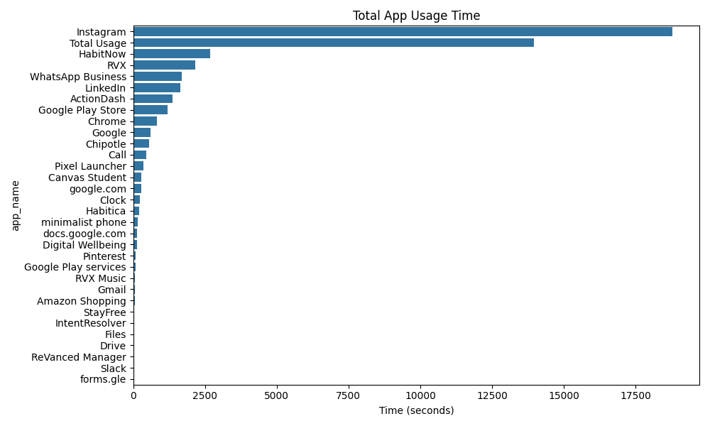
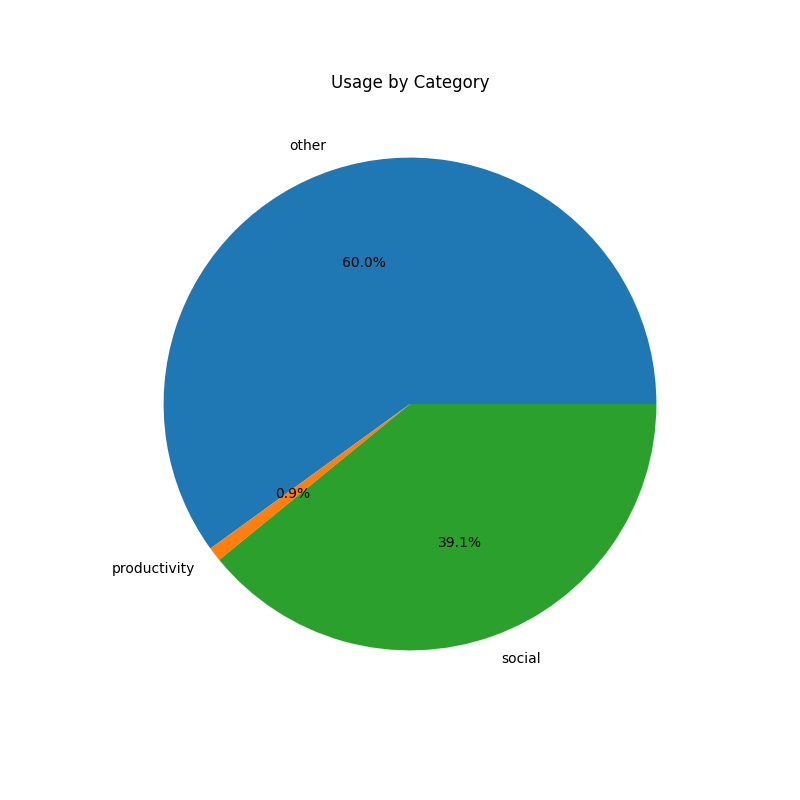
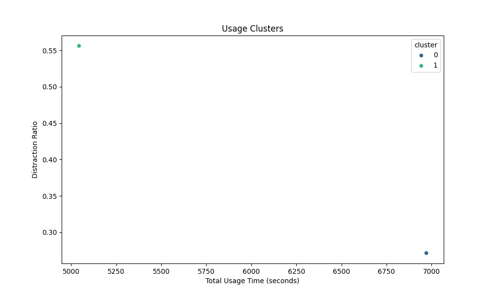

Overall App Usage Analysis Report
Generated on 2025-04-24 23:48
This report contains aggregate information across all 8 users in the dataset.
Key Metrics
Total Usage Time: 13.35 hours
Average Session: 353.38 seconds
Average Distraction Ratio: 41.4%
Top 5 Apps by Usage
- Instagram: 313.1 minutes
- Total Usage: 232.7 minutes
- HabitNow: 44.5 minutes
- RVX: 35.9 minutes
- WhatsApp Business: 28.0 minutes
Visualizations




Model Performance
The following models were trained to predict high distraction patterns:
Recommendations
- Consider setting time limits for apps with high usage.
- Aim for a distraction ratio under 30% for better productivity.
- Try to limit device unlocks to less than 50 per day.